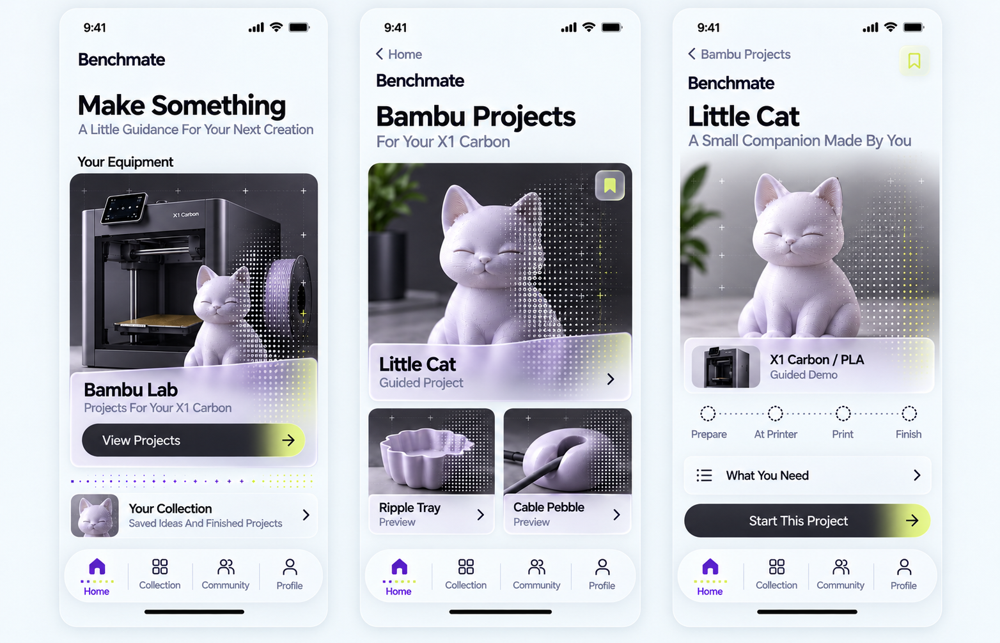
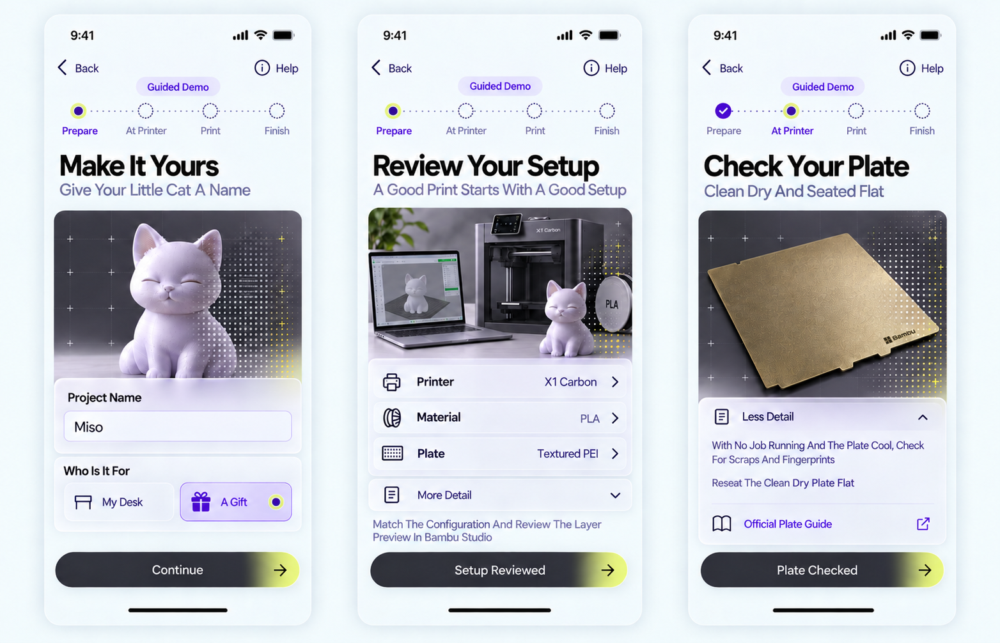
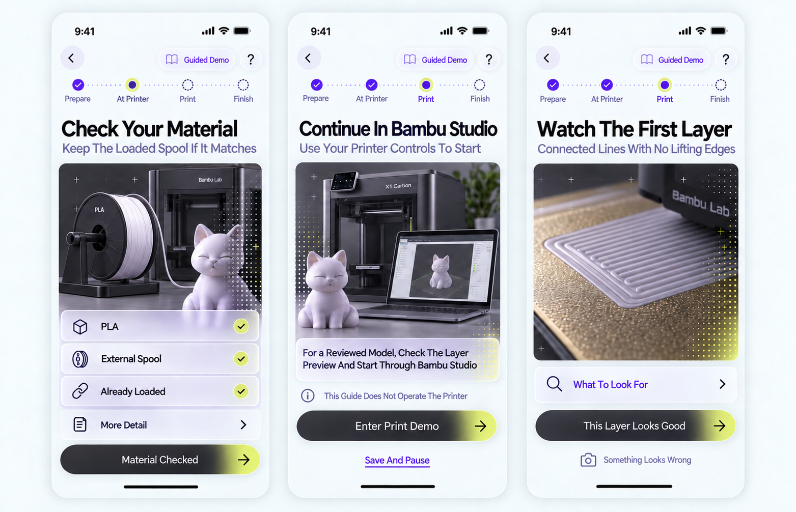
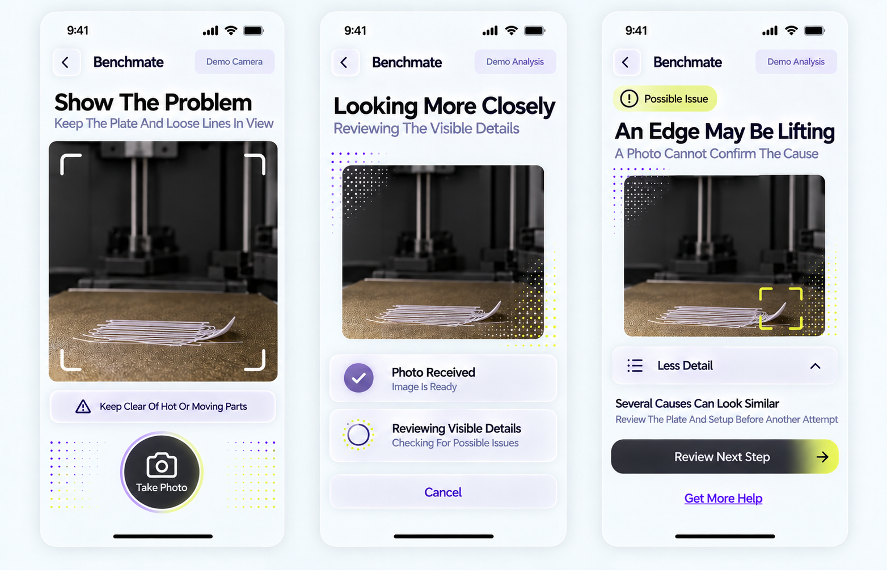
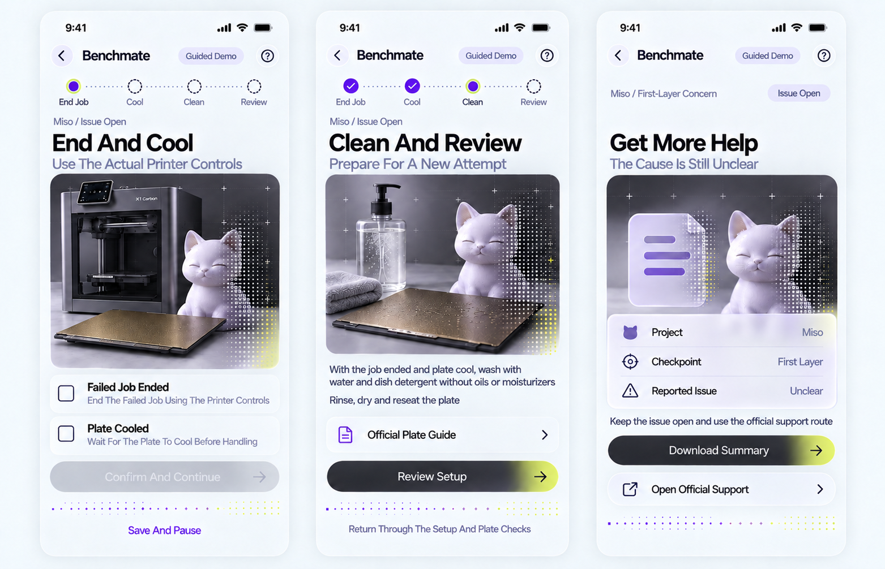
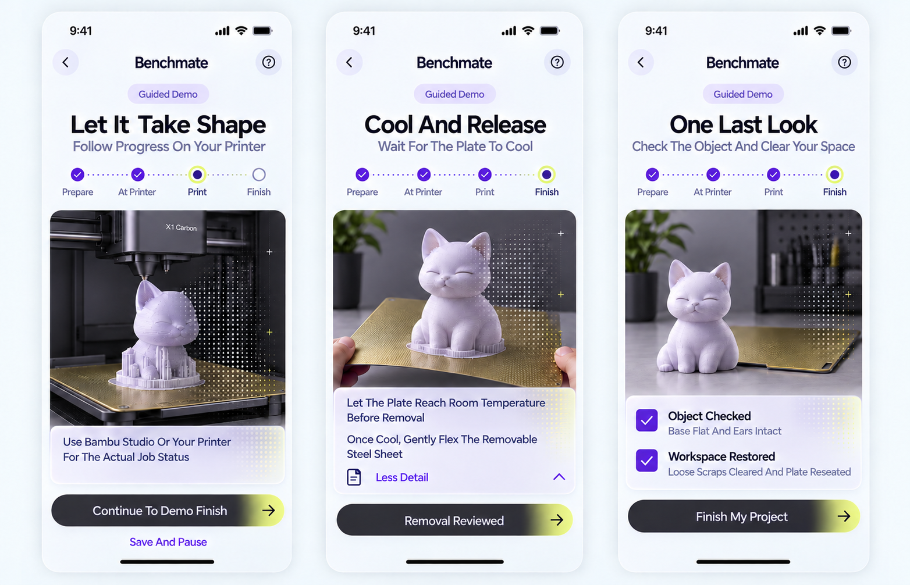
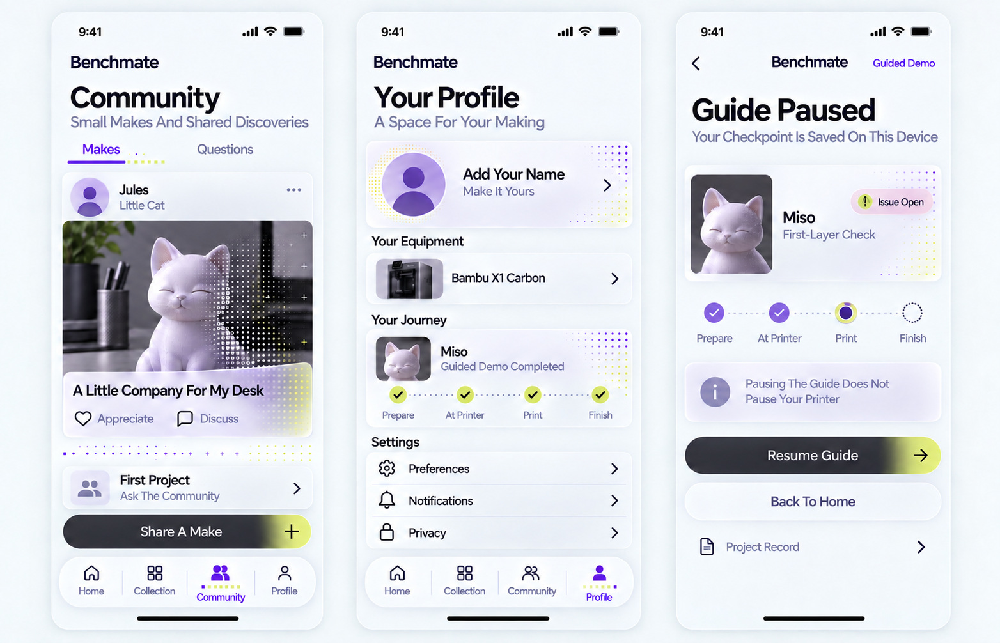

From First Idea To Finished Project
Twenty-four iPhone screens across eight concept boards, continuing the purple and citron direction. Headers and subtitles use Title Case without periods. Matte glass, the sculptural cat and matrix patterns extend through imagery, controls, dividers and progress.
Main Path
Home → Bambu Projects → Little Cat → Personalize → Setup → Plate → Material → Studio Handoff → First Layer → Print → Cool → Check → Complete → Collection
If Something Looks Wrong
First Layer → Photo → Processing → Possible Finding → End And Cool → Clean → Review Setup → Repeat Preparation For A New Attempt
Other Routes
Unclear Finding → Get More Help · Collection → Share Preview · Browsing → Community Or Profile · Active Guide → Save And Pause → Resume The Same Checkpoint
Static concept images for review before implementation. The running app is unchanged. Open any board to inspect it at full size.
01 / Discover The Project
Home opens Bambu Projects. Choose Little Cat, review what the project needs, then start the guide. Collection, Community and Profile remain available in browsing navigation.

Screen Titles And Subtitles
- Make Something
A Little Guidance For Your Next Creation - Bambu Projects
For Your X1 Carbon - Little Cat
A Small Companion Made By You
02 / Personalize And Prepare
Name the cat Miso, choose its purpose and review the example printer, material and plate setup. The plate screen shows optional guidance expanded.

Screen Titles And Subtitles
- Make It Yours
Give Your Little Cat A Name - Review Your Setup
A Good Print Starts With A Good Setup - Check Your Plate
Clean Dry And Seated Flat
03 / Material And First Layer
Check the existing loaded material, continue through the Bambu Studio handoff and review the first layer. A concern opens the photo-help branch.

Screen Titles And Subtitles
- Check Your Material
Keep The Loaded Spool If It Matches - Continue In Bambu Studio
Use Your Printer Controls To Start - Watch The First Layer
Connected Lines With No Lifting Edges
04 / Photograph And Review
Take a problem photo, see the processing state and review a possible finding with expandable detail. All photos and analysis in these concepts are simulated.

Screen Titles And Subtitles
- Show The Problem
Keep The Plate And Loose Lines In View - Looking More Closely
Reviewing The Visible Details - An Edge May Be Lifting
A Photo Cannot Confirm The Cause
05 / Recover Or Get Help
End the failed attempt through the actual printer controls, allow cooling, then clean and revisit setup. The unresolved alternative offers a local summary and official support.

Screen Titles And Subtitles
- End And Cool
Use The Actual Printer Controls - Clean And Review
Prepare For A New Attempt - Get More Help
The Cause Is Still Unclear
06 / Print And Finish Carefully
Follow the actual printer's status, review cooling and release, then check the object and restore the workspace before completing the guided project.

Screen Titles And Subtitles
- Let It Take Shape
Follow Progress On Your Printer - Cool And Release
Wait For The Plate To Cool - One Last Look
Check The Object And Clear Your Space
08 / Community Profile And Continuity
Explore a fictional community example and the profile, or resume a saved first-layer checkpoint. The paused view is a separate branch with an open issue, not a step after completion.

Screen Titles And Subtitles
- Community
Small Makes And Shared Discoveries - Your Profile
A Space For Your Making - Guide Paused
Your Checkpoint Is Saved On This Device
Review Notes And Implementation Boundaries
- The photo flow suggests a possible visible issue; it does not confirm a cause. Camera and analysis labels identify the demonstration.
- The paused checkpoint preserves an open issue. Pausing the guide never pauses the printer.
- The plate, spool, printer and printed parts are generated illustrations. Plate seating and hardware details need source-accurate assets before implementation.
- Actual text sizing, contrast, Dynamic Type, touch targets and disclosure behavior must be verified in native UI components. These raster concepts are not an accessibility test.
- Settings, discussions and the final post preview/publish view are outside this concept packet. Community content is fictional and no post was published.